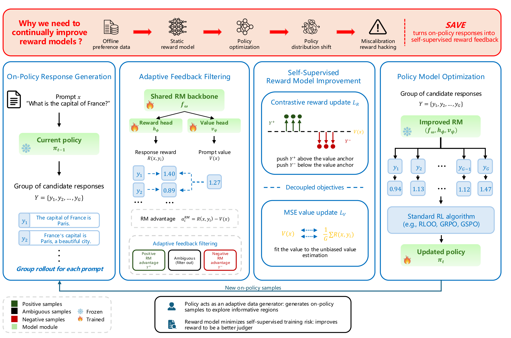

STEP 1
On-policy generation
The current policy rolls out a group of candidate responses for each prompt.
Preprint · arXiv 2026
SAVE — Self-supervised reward model improvement via Value-Anchored On-policy feedback
University of Science and Technology of China · Beijing Institute for General Artificial Intelligence

Building strong reward models (RMs) for language model alignment is bottlenecked by the cost and difficulty of acquiring diverse and reliable preference data from human annotation or judge models. It is dramatically worse as the policy evolves beyond the static RM training. Therefore, we propose SAVE (Self-supervised reward model improvement via Value-Anchored On-policy feedback), a framework that grades on-policy responses as feedback by using the value function for on-policy RM training. SAVE naturally converts the reward-graded on-policy responses into supervision with a prompt-specific value head as an adaptive anchor. It computes RM advantages and filters ambiguous samples to update the RM via a contrastive objective. The effectiveness of SAVE for enhancing RM training is strongly validated through rigorous empirical evaluation across six diverse benchmarks. It achieves outperforming results across all datasets while maintaining consistent improvements across three RL algorithms (GRPO, RLOO, GSPO) and different policy backbones.
STEP 1
The current policy rolls out a group of candidate responses for each prompt.
STEP 2
A shared backbone produces a response reward and a prompt value; the RM advantage separates positive / negative samples and filters ambiguous ones.
STEP 3
A contrastive objective pushes positives above and negatives below the value anchor, while the value head is fit to the unbiased value estimate.
STEP 4
The improved RM scores fresh candidates and a standard RL algorithm (RLOO, GRPO, GSPO) updates the policy.
@article{wang2026flip,
title = {The Flip Side of RLHF: On-Policy Feedback for Reward Model Self-Supervised Improvement},
author = {Wang, Xiaobo and Wu, Tong and Tang, Min and Li, Jiaqi and Liu, Qi and Zheng, Zilong},
journal = {arXiv preprint arXiv:2605.30888},
year = {2026}
}